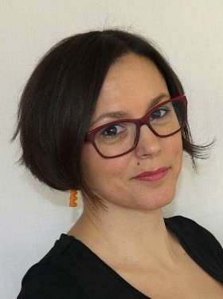

Kdo jsem

- Mám více než 10 let zkušenosti s koordinací a administrací komplexních projektů a zpracováváním
velkých datových souborů.
- Ráda v práci zapojuji své silné stránky jako je procesní myšlení, kreativní řešení problémů,
preciznost při práci s daty, přímočará komunikace a schopnost dotahovat věci do konce.
- Dokážu si poradit v nenadálých situacích. Hodně mě baví zpracovávání procesní
dokumentace, psaní manuálů i následné školení uživatelů či kolegů.
Angličtinu ovládám na pokročilé úrovni.
- Jsem rozený optimista se smyslem pro humor, který na sobě neustále pracuje.
- Ráda se učím nové věci, nedávno jsem absolvovala rekvalifikační kurz Digitální akademie – Testování a
nyní jsem frekventantkou dalšího tříměsíčního kurzu "Staň se kodérkou".
Pracovní zkušenosti
2016-dosud
SENIOR SPECIALISTA SERVICE DESKU, PROJEKTOVÁ PODPORA MOS
OPERÁTOR ICT, a.s.
- Nastoupila jsem jako jeden z prvních zaměstnanců oddělení vyvíjející a zastřešující centrální service
desk pro 57 městských částí i naši společnost.
- Navrhuji změny procesů i procesy nové ve spolupráci s jejich garantem (návrh procesů pro programátory) a
testuji je pro všechny role.
- Vytvářím manuály a také školím své kolegy i koncové uživatele systému.
- Udržuji a aktualizuji uživatelskou databázi.
- Starám se o administrativu celého projektu, včetně příprav objednávek či právních podkladů pro rozvoj
projektu.
- Pořizuji zápisy z jednání, hlídám milníky a termíny projektů a dodržování smluv
- Testuji frontend (webovou a mobilní aplikaci Lítačka, Idolka) i backend projektu MOS.
KOORDINÁTOR SMART CITY (10/2016–03/2017)
- Byla jsem u zrodu Smart City v Praze, kdy jsem se účastnila výběru pilotních projektů, připravovala
zadávací dokumentaci, podklady pro jednání a schvalování projektů atp.
2008-2016
POI KOORDINÁTOR pro ČR a SR
Here, a.s.
- Zodpovídala jsem za implementaci bodů zájmu (restaurace, kadeřnice, hotely apod.) ve firemním SW pro
navigace zákazníků (VW, Audi, Nokia, Garmin apod.)
- Zpracovávala jsem plány pro procesování dat po regionech, na které jsme měli určený časový úsek a
prioritu. Podílela jsem se také na optimalizaci firemních procesů.
- Vybírala jsem, zaučovala a koordinovala až 8 brigádníků v terénu, kteří sbírali podklady pomocí GPS
technologií, kvalitu jsem pak kontrolovala v kanceláři/na místě (5–6 týdnů v roce jsem strávila v
terénu).
- Ke každému bodu jsem musela ověřit správnost informací, editovat data do definovaného formátu. Následně
jsem vše nahrávala do databází ve firemních SW.
- Data jsme nahrávali nová a ta stávající pravidelně aktualizovali podle jejich priority.
- Účastnila jsem se pravidelných telekonferencí a debat s dalšími kolegy z Evropy.
- Kolegům jsem občas pomáhala s kódováním silnic.
- V rámci RD (11/2011–12/2014) jsem spravovala e-shop pro společnost Skycig CZ, zajišťovala zákaznickou
podporu, logistiku, tvorbu letáků i návodů.
2008
ODBORNÝ REFERENT
Ministerstvo pro místní rozvoj
- Podporovala jsem žadatele o dotace z Evropských strukturálních fondů.
2006-2008
Studijní a pracovní pobyt v Austrálii
2004-2005
REFERENT ODDĚLENÍ EXTERNÍCH REGISTRŮ
Státní zemědělský intervenční fond
- Byla jsem členem malého týmu v novém oddělení, který školil terénní inspektory v mapovém SW a poskytoval
jim metodickou podporu, tvořila tematické mapy a propagační materiály.
- Ve sporných případech jsme jezdili do terénu a kontrolovali, zda realita odpovídá snímkům ze satelitu.
Vzdělání
2020
Digitální akademie – Testování
Czechitas
2018
ISO/IEC 20000 Foundation
Tayllorcox
2016
Online kurz Podnikání z pláže
Stáňa Mrázková
1998–2004
Krajinné inženýrství
ČZU v Praze
IT znalosti
GIS programy
ArcGIS, QGIS, Atlas, PDS, PS3 – uživatelská znalost
LanDesk, Ivanti Service Manager
uživatelská znalost
MS Office
Word, Excel, PowerPoint, Access, Teams, Visio – uživatelská znalost
HTML, CSS
základy
SQL
základy
Postman, IntelliJ IDE, Burp, Git, Selenium, JIRA, Mantis, Redmine
základy
OSTATNÍ ZNALOSTI A DOVEDNOSTI
Angličtina
pokročilá znalost na úrovni B2-C1 (FCE2004, studium v Austrálii, každodenní komunikace v mezinárodním týmu po
dobu 4 let)
Němčina
základní znalost A2 (6 let na gymnáziu, převážně písemná komunikace)
Švédština
základní znalost A1
ŘP
sk. B, aktivní řidič, bez nehody
Ostatní
velmi dobré povědomí o online marketingu a sociálních sítích
Zájmy
Práci u počítače ráda kompenzuji procházkami v přírodě s rodinou a našimi psy. Jako labužník milující vaření
si udržuji kondičku jógou nebo prací na zahradě.
Protože jsem aktivní člověk, psala jsem články pro časopis Epocha i svůj blog, vydala kuchařku pro děti.